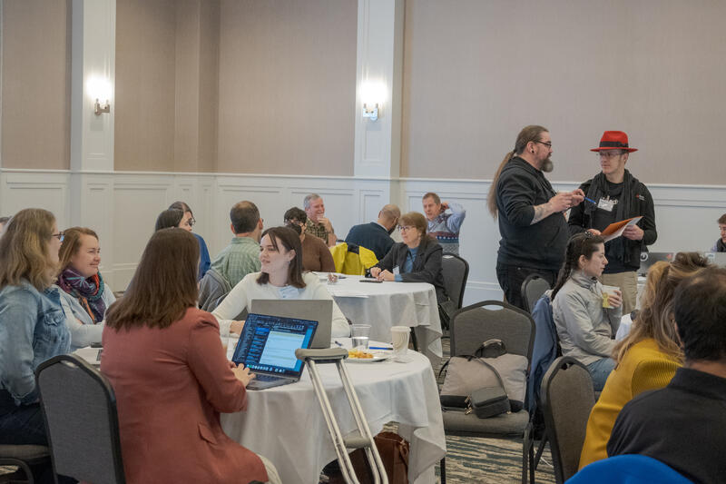

EFI-CI Workshop Summary
EFI Cyberinfrastructure Workshop Summary
April 10th, Wednesday - Day 1 of Workshop
Introduction and Overview
Jake Kritzer, Executive Director of NERACOOS, welcomed everyone and read a letter from Congressman Chris Pappas highlighting the importance of the workshop’s work on improving ecological forecasting systems. This is critical for preparing coastal New Hampshire communities like Portsmouth for impacts of climate change, including severe flooding from storm surges and sea level rise that have already caused millions in damage.
Mike Dietze, EFI Steering Committee Chair, provided an overview of the Ecological Forecasting Initiative (EFI). EFI formally launched in 2018 aiming to build an interdisciplinary community of practice around making ecological science more predictive and useful to society. It involves participants from academia, agencies, industry, and NGOs across disciplines like ecology, computer science, and social science. Key EFI activities include: - Hosting workshops, conferences, and sessions at major meetings - Organizing working groups on cross-cutting challenges like cyberinfrastructure, theory, decision support, education, and diversity - Education/training efforts like courses, webinars, and mentoring programs - Developing products like policy briefs and reports with agency partners - The ongoing NEON Forecast Challenge engaging over 32,000 forecasts so far - Community building through a Slack workspace, newsletters, and social media
Jake Zwart from USGS reviewed the specific background motivating this cyberinfrastructure workshop, tracing back to a 2016 meeting discussing the gap between ecological forecasting research funded by NSF and lack of operational implementations. The 2019 USGS report and 2020-2022 interagency roundtables identified cyberinfrastructure and stakeholder engagement as the biggest needs for transitioning forecasts to operations.
The main goals for this workshop are:
- Document current CI practices across different forecasting projects
- Identify common CI needs and gaps
- Propose a CI design to support various ecological forecasting applications
The primary outcome will be a living online “CI handbook” hosted on GitHub’s EFI organization synthesizing recommended practices. There is also potential for a future workshop on the research-to-operations gap.
Cameron Thompson discussed the process for developing the CI handbook by synthesizing input and findings from presentations, discussions, breakouts and documentation at this workshop. He reviewed the FAIR data principles (findable, accessible, interoperable, reusable) and introduced the CARE principles (collective benefit, authority to control, responsibility, ethics) which extend data governance considerations to indigenous data sovereignty. An interactive poll using PollEverywhere asked participants to define the boundary between “small” and “medium” size ecological forecasts to explore establishing a common vocabulary.
Design Justice Principles
Sean Dorr and Melissa Kenney gave a joint presentation on applying design justice principles to improve the understandability and service equity of ecological forecasts.
Sean Dorr introduced himself as an Ojibwe tribal member and 4th year Computer Science PhD student at the University of Minnesota. His research focuses on incorporating indigenous perspectives into data visualization and human-computer interaction, bridging different worldviews.
Sean reviewed his work applying design justice principles with the Ecological Forecasting Initiative (EFI) community. Design justice centers people normally marginalized by design and uses collaborative creative practices to address community challenges. Key activities included:
- Reviewing EFI projects against the 10 design justice principles to identify who is included/excluded
- Positionality exercise mapping education, geography, hobbies, skills, languages, career level, demographics, and values of participants
- Crafting engagements and paths forward to realize design justice with excluded communities
Early insights emphasized the importance of clearly defining “we,” “community,” and “designers,” identifying positionality, and applying the principles concretely.
Melissa Kenney shared lessons learned from over a decade of research at the University of Minnesota to improve the understandability of environmental decision support products:
- Visualize the main story, nothing more
- Subjective feedback can be misleading
- Empirical testing accelerates user-centered changes
- Interactive products require revisiting visualization norms
- Early co-production with diverse users improves equity
Examples included improving National Climate Assessment indicators, USGS water supply outlooks, NOAA temperature/precipitation outlooks, and drought monitors through redesign and controlled testing. She emphasized the power of empirical evaluation to drive research-to-operations improvements.
Melissa also discussed an ongoing NOAA project to co-develop equitable flood and drought projections for the Upper Mississippi River basin by integrating climate models and engaging impacted communities. Building long-term relationships enables research questions and products to be transformed to better serve diverse users.
In the Q&A, they discussed strategies for expanding user testing as demands evolve and making the design justice approach scalable for resource-constrained agencies. Sean and Melissa welcomed follow-up discussions to provide feedback on specific visualizations.
Design Justice Principles Activity
In the Design Justice Principles activity session, participants worked in small groups to apply design justice principles to a specific goal: creating cyberinfrastructure that supports workflows for communities with limited Internet access. The activity had two parts:
- Crafting Engagements: Groups selected a relevant design justice principle and brainstormed ways to engage the community to achieve the goal, placing ideas on sticky notes along a spectrum from small to big effort.
- Crafting Paths Forward: Groups completed sentences to articulate how a selected engagement would lead to realizing the design justice principle, identifying metrics of success and envisioning long-term results.
Groups’ Reported Ideas:
- Group 1: Focused on Principle 6 (everyone is an expert based on lived experience). They proposed finding boundary organizations to collaborate with the community, holding town halls with follow-up, and building shared resources. Success metrics included the percentage of community members using provided services. Long-term results envisioned a community forum to improve access.
- Group 2: Selected Principle 10 (look for what’s already working at the community level). They suggested attending community events to understand current information flows and access. Knowing what information is used and how would enable developing a broader science communication toolkit tailored to community needs.
- Group 3: Chose Principle 3 (prioritize design impact over designer intentions). They proposed engaging middle school students in and out of school to introduce data products, observe their interaction, and learn about community access needs. Students would share learnings with their families, expanding awareness.
- Group 4: Also focused on Principle 3. With farmers as the community, they emphasized iterative feedback to prioritize design impact. Growing and retaining diverse feedback participants would indicate progress. Long-term results included having the feedback process adopted by others.
- Group 5: Initially considered Principles 3 and 10 but settled on Principle 2 (center voices of those directly impacted). For rural and tribal college students with limited resources, they proposed iterative discussions to identify needed data products, test prototypes, and build community capacity to drive the process over time.
- Group 6: Selected Principle 10 and some of 2. They suggested interviews/surveys to discover what already works and doesn’t work for Internet-limited communities. Identifying unexpected solutions and unrecognized problems would demonstrate progress. Long-term products should integrate with existing community practices.
- Group 7: Emphasized Principle 3. They proposed collaborating via an on-site workshop to understand the design’s potential community impact. The community agreeing that the goals were communicated and the product was transformed would indicate success. Ongoing engagement and iteration were envisioned long-term.
The activity helped participants start orienting their thinking around design justice considerations even when working on cyberinfrastructure that may seem removed from people. The presenter emphasized that software always involves people—developers, users, collaborators—and encouraged the group to keep this human-centered lens throughout the workshop.
State-of-the-art Workflows and Best Practices Presentations
Istem Fer - “What could an operational agricultural forecasting CI look like? Field Observatory Network (FiON) model-data workflows and services”
Istem Fer, a senior researcher at the Finnish Meteorological Institute, presented on their work developing a cyberinfrastructure for agricultural carbon and greenhouse gas monitoring, modeling, and forecasting in Finland. Their goal is to quantify the impacts of regenerative agriculture practices and provide decision support to a range of stakeholders, with farmers as the primary end users.
Key challenges they face include:
- The need to work with multiple models, each with different operation input/output formats and programming languages
- The models are heavily parameterized and data-intensive to configure, initialize, and calibrate
- The workflows require advanced computing and complex automation
To address the challenges, they adopted an existing community cyberinfrastructure called PEcAn (Predictive Ecosystem Analyzer). PEcAn wraps around different process-based models, standardizing and automating the data flows and other tasks. Their typical workflow ingests a variety of field data, propagates uncertainty via model ensembles, performs calibration and data assimilation, and disseminates results via an online Field Observatory service.
One operational example is a 15-day iterative carbon flux forecast that assimilates data to adjust model states each day. However, most of their models are not yet compatible with formal data assimilation.
To improve scalability, they are in the process of migrating from traditional servers to a cloud-based Openshift cluster. Their wish list also includes enhancing the PEcAn API for 3rd party access, addressing model-data bottlenecks that hinder further scaling, providing more decision-relevant seasonal forecasts for farmers, and integrating with other EFI cyberinfrastructure such as forecast scoring standards.
In summary, the project is driven by stakeholder demand but still working on researcher adoption. PEcAn was chosen to enable the key need of multi-model interoperability. Openness, version control, modularity, and virtualization were important design elements. Despite the agricultural context, many aspects may serve as best practices for ecological forecasting cyberinfrastructure more broadly.
David Watkins - “Forecasting infrastructure in context: lessons learned from greenfield forecasting projects”
David Watkins, a machine learning engineer with the USGS Water Mission Area, shared lessons learned from developing cyberinfrastructure for forecasting projects over the past few years, starting from a greenfield situation.
He emphasized thinking about the infrastructure in the broader context of batch vs. streaming data processing paradigms. USGS forecasting use cases like stream temperature, drought, and chlorophyll-a fall into the batch processing category, with forecasts running nightly to incorporate the previous day’s data.
Their initial stream temperature project had to prioritize speed and minimize new tools due to a short turnaround, leading them to incur technical debt. For the longer-term drought and temperature projects, priorities shifted to using a modern cloud-based approach for longevity, ease of maintenance via serverless services, and simplicity (e.g., repetitive daily processing vs. duplicating data stores).
Their current tech stack includes AWS Step Functions for orchestration, Docker for environment control, AWS Fargate/ECS, SageMaker, and S3 for compute and storage, GitLab for CI/CD pipelines, and CloudFormation for infrastructure-as-code.
Patterns for success they’ve identified include:
- Reproducible practices becoming non-negotiable
- Modularity for debugging
- Diverse skills (software, modeling, visualization, outreach) in a cross-functional team
- Planning for operations from the start
Their wish list includes more infrastructure staff, exploring ML-specific tools for experiment tracking, model registries, and feature stores, and increasing standardization across projects and organizations.
In the Q&A, David welcomed input on making this type of overview relevant for both machine learning and process-based modeling applications in the audience.
Clarissa Anderson - “Development of a Harmful Algal Bloom (HAB) Data Assembly Center: a prototype for the National HAB Observing System (NHABON) in the U.S.”
Clarissa Anderson from UC San Diego and the Southern California Coastal Ocean Observing System (SCCOOS) presented their work developing a prototype Harmful Algal Bloom (HAB) Data Assembly Center as part of the U.S. National HAB Observing Network (NHABON).
The HAB problem in California is primarily due to the diatom Pseudo-nitzschia and the neurotoxin domoic acid it produces, which has impacted fisheries, marine mammals, and public health. While there is a long history of HAB monitoring and modeling in California, the Imaging FlowCytobot (IFCB) network provides a new opportunity for near real-time, high-resolution observation of phytoplankton communities.
With funding from the NOAA NCCOS HAB Community Technology Accelerator project, they are developing the HAB Data Assembly Center to provide centralized cyberinfrastructure for the IFCB network.
Key elements include:
- Automated data accession, image processing, and product generation
- Classifier training, evaluation, and application tools
- Standardized community annotation workflows
- Open source best practices for software, methods, and metadata
The Transition Advisory Committee helps identify barriers and broaden the scope beyond California. Priorities include extending to other regions, engaging diverse stakeholders, and finding a sustainable home for the system.
Downstream applications have included a daily alert system for managers, morphometric trait databases for ecosystem modelers, and transformations to push data to repositories like OBIS.
Their wish list includes plug-and-play instrument integration, expanded regional nodes, more management-tailored products, and an instrument-agnostic evolution into a general Plankton Data Assembly Center with community-wide standards for imagery data.
Quinn Thomas and Carl Boettiger - “Adventures from a million forecast march: community driven-CI for ecological forecasting”
Carl Boettiger started with principles for designing cyberinfrastructure to make it easier to integrate the explosion of ecological data and forecasting methods. Key points included:
- The “Lego principle” - components should be modular, reusable, and interoperable based on common standards without custom modifications that break compatibility
- Agreement on standards is critical - e.g., common table formats for forecasts
- Use of reproducible compute environments (e.g., Docker), S3 object storage, and range requests for efficient data access
Quinn Thomas then shared stories of applying these principles in the NEON Ecological Forecasting Challenge, a platform that enables the ecological forecasting community to submit iterative near-term forecasts of NEON data before it is collected. Their journey included:
- Training the community via workshops and template repositories
- Automating daily forecast submission and evaluation using modular CI components
- Scaling up from hundreds to thousands of forecasts per month by shifting to self-hosted runners
- Extending the platform to partner projects like LTER and USGS via a “forkable CI”
- Developing a clearinghouse of challenge catalogs to make grassroots efforts discoverable
Throughout, adherence to common data and metadata standards allowed flexibility to adapt to growing scale and scope.
Their wish list includes further sharing of “Lego brick” components, increased multi-language support, and deeper engagement with the machine learning community.
Overall, the presentation highlighted how careful CI design around modularity and standards from the beginning enables a community of forecasters to build and innovate together.
Renato Figueiredo - “From FLARE to FaaSr: Towards Reusable Scalable Cross-Platform Cloud Native Workflows”
Renato Figueiredo from the University of Florida (soon Oregon State University) presented work done in collaboration with Cayelan Carey and Quinn Thomas from Virginia Tech on extending their FLARE (Forecasting Lake and Reservoir Ecosystems) cyberinfrastructure to a more generalizable system called FaaSr.
FLARE uses a cloud-based event-driven workflow leveraging Docker containers for reproducibility and Function-as-a-Service (FaaS) for serverless invocation of the containers. Intermediate data is stored in S3 buckets. The key goals were scalability, reproducibility, and low barriers to entry for development and deployment using R.
While FLARE addressed specific project demands, FaaSr aims to generalize the approach to support:
- Multiple cloud FaaS providers without code changes
- Composition, sharing, and reuse of workflows
- Decoupling of workflow configuration from code
FaaSr is an open-source R package that simplifies development and deployment of FaaS workflows. Users write functions in R, use S3 for data I/O, and describe the workflow composition in a JSON configuration. FaaSr automates the registration, execution, and orchestration of the workflow on different FaaS platforms (GitHub Actions, OpenWhisk, AWS Lambda).
Key features include cross-platform support via Docker and S3, a GUI for visual workflow composition, and flexibility to use custom containers per function. Figueiredo demonstrated a NEON forecast example running with minimal code changes and a proof-of-concept for concurrent execution across platforms.
The wish list includes community resources like shared S3 buckets and OpenWhisk instances, improved usability through GUIs and cloud training, and community engagement for feedback, new features, and workflow sharing.
Figueiredo expressed enthusiasm for collaborating with the ecological forecasting community and contributing to initiatives where possible.
Alexandra Kirk - “VEDA an open-source open-science platform for Earth Observation data”
Alexandra Kirk, a cloud engineer at Development Seed, presented on behalf of the NASA IMPACT (Inter-agency Implementation and Advanced Concepts Team) on VEDA, an open platform that brings Earth science datasets to open-source tools for data processing and analysis.
VEDA was initiated in response to the need for inter-agency collaboration and data sharing during COVID lockdowns when on-premise resources were unavailable. It has since evolved to reduce barriers to compute resources, data publishing, and sharing insights with both technical and non-technical audiences.
Key elements of VEDA’s cyberinfrastructure include:
- Open source Earth Observation API (EO-API) tools for bootstrapping a “stack catalog” with APIs and tiling resources for efficient data access
- Modular components that enable multiple teams to assemble customized “VEDA stacks”
- Continuous development and improvement driven by community usage
The core workflow involves:
- Transforming data to analysis-ready cloud-optimized (ARCO) formats in S3 storage
- Deploying cloud compute resources (e.g., Jupyter Hubs) co-located with the data for efficient processing
- Sharing data and insights back out via APIs, web applications, and dashboards
The EO-API infrastructure includes a PostgreSQL database with a STAC schema, a FastAPI service conforming to the STAC specification, and libraries for querying data by space, time, and properties.
An example of VEDA in action was scaling an algorithm developed by the NASA EIS Fire Tracking team from California to near real-time coverage of the Continental US. This involved integrating with the MAAP processing system, scheduling jobs, and publishing outputs to the VEDA API for dashboard visualization.
Kirk emphasized the importance of VEDA’s open modular design in enabling collaboration and continuous improvement through community usage. Documentation, tutorials, and a JupyterHub for hands-on exploration are available at the shared links.
Q&A Session
Hassan asked where PEcAn gets its data from. Istem and others responded that it primarily uses public APIs.
A question was posed about how NEON uses Docker. The response was that most researchers already have a local workflow and wouldn’t want to change it, so ideally the Docker usage is invisible and just works. However, power users would know what to do with Docker themselves.
Hassan inquired about reporting AI-generated data, including QA/QC. Clarissa explained that uncertainty metrics come out of the analysis, and while the ML process is an identification process, the data is real, not synthetic (though it may become interpolated). David added that the outputs aren’t particularly special, but the difference is in provenance tracking, which needs a specific identifier for things like training data.
There was a discussion about Open Geospatial Consortium standards. Carl mentioned that there is some tension and complexity in the evolution of standards through the OGC model versus the open-source community model.
Jake Zwart noted that Istem seemed to be the only one using an existing CI or workflow and asked others about their decision processes for adopting or developing workflows. Istem explained that she helped develop PEcAn, which solved problems similar to what she was working on. While it’s been difficult to get external groups to adopt it, it’s now more distributed, with mostly agricultural groups using it. Renato pointed out that a challenge with workflows is the infrastructure behind them, and moving to the cloud helps avoid infrastructure upkeep and lock-in.
A question was raised about the risk of vendor lock-in when using cloud services. David responded that they use services in a fairly generic way, so while there would be some costs, they could migrate to another commercial cloud provider if needed. Renato added that moving to the cloud model already makes it easier to transition between platforms. Carl mentioned that they’ve already had experience with this issue.
Istem asked how NEON and other challenges talk to each other. Quinn and Carl explained that they are linked at the catalog level, so a search for something like chlorophyll-a forecasts in Wisconsin could return results from different challenges. They also share fundamental packages and Docker containers. EFI made a strategic decision to keep the challenges separate to empower communities and maintain data sovereignty rather than forcing everything to go through EFI, which acts more as a clearinghouse for standards and components.
Workflows and Best Practices Breakout Group Discussions
Based on a comprehensive review of the breakout session notes, report-outs, and the broader context provided by the workshop presentations, several key themes, tensions, and challenges emerged regarding the current state and future development of ecological forecasting workflows.
1. Centrality of standards and best practices
A dominant theme across all breakout groups was the crucial role of standards and best practices in enabling the development of robust, interoperable, and sustainable ecological forecasting workflows. There was also broad agreement on the need to “develop by using standard practices in other fields rather than reinventing them.” Groups emphasized the value of adopting and adapting existing standards and practices from fields such as software development, data management, and cloud computing. They discussed the importance of establishing community-wide conventions around data formats, metadata schemas, and workflow design patterns to facilitate collaboration, reproducibility, and scalability. Nevertheless, participants also recognized the challenge of balancing standardization with flexibility and adaptability. This tension between top-down standardization and bottom-up customization was a recurring theme, particularly in discussions around the differing needs of research and operational workflows.
2. Criticality of data integration and harmonization
Another major theme was the challenge of integrating and harmonizing heterogeneous data from diverse sources and formats. Participants highlighted this as a key bottleneck in ecological forecasting workflows, noting that “biological and ecological data is very hard to standardize.” As one group put it, “we thought that some physical data can be standardized… but it is challenging for biological and ecological data.” Furthermore, there was some disagreement about the feasibility and desirability of completely standardizing all ecological data types. Groups discussed the need for better tools, methods, and conventions to support data cleaning, transformation, integration, and provenance tracking. They also emphasized the importance of capturing and propagating uncertainty throughout the data lifecycle. Some participants suggested a more pragmatic approach with “even if not community-wide standard, a project standard will be useful.”
3. Importance of communication, collaboration, and culture
Cutting across many of the breakout discussions was a recognition of the vital importance of effective communication, collaboration, and cultural practices in advancing ecological forecasting workflows. As one group put it, ecological forecasting as a community and field was reaching a critical mass due to greater technology and data access, which enables rapid development and opportunity but also presents challenges. Participants repeatedly emphasized the need for closer collaboration and better communication between domain scientists, IT experts, and other key stakeholders.
As one group noted, IT experts may not address the right questions through their forecasting CI design, while a domain scientist may code a fragile system; thus, there needs to be intense communication between them. Likewise, another group called for engineer and scientist mutualism and synergy without siloing. Groups also discussed the importance of fostering a culture of openness, transparency, and continuous learning within the ecological forecasting community. They highlighted the need for better documentation, knowledge sharing, and training resources to support the adoption and long-term maintenance of best practices. However, participants also acknowledged the challenge of overcoming entrenched organizational and disciplinary silos, as well as the lack of incentives and rewards for investing in these kinds of activities. As one group put it, “a lot of these best practices really boiled down to software development best practices,” but “it was very important to also make sure to understand and articulate the motivation for the forecasting.”
4. Harnessing the potential of cloud and modular architectures
Many groups discussed the potential of cloud computing and modular, interoperable architectures to accelerate the development and deployment of ecological forecasting workflows. Participants highlighted the benefits of technologies such as containers, object storage, and serverless computing in enabling reproducibility, scalability, and flexibility. They also emphasized the value of breaking down complex workflows into smaller, reusable components that can be shared and recombined in different contexts.
However, some groups also raised concerns about the potential risks and trade-offs associated with a wholesale move to the cloud, particularly around issues of vendor lock-in, long-term sustainability, and data sovereignty. Participants grappled with how to balance the benefits of leveraging industry tools and platforms with the need to retain control and ownership over critical infrastructure and data assets. As one participant put it, “Commercial providers are now subsuming some things that might have been viewed as having government roles but without the social contract that they do when they’re in government.”
5. Tensions between research and operational requirements
A recurring tension throughout the breakout discussions was the challenge of reconciling the differing needs, incentives, and constraints of research and operational environments. Groups highlighted the tension between research quality and production quality workflow, noting that each requires a different set of skills, tools, and practices. Participants discussed the difficulty of translating research models and workflows into production-ready systems, as well as the lack of communication and coordination between research and operational teams.
Some groups emphasized the need for greater investment in the “human factors” and organizational aspects of ecological forecasting, such as training, documentation, and stakeholder engagement. They argued that “technology has reduced some barriers but more work is needed” and that “the people that we need aren’t necessarily engaged.” Participants also noted the tension between the scientific incentives for novelty and innovation and the operational requirements for stability, reliability, and continuity. As one group put it, “scientists and the systems they are in value innovation over stability, but what’s really needed is stability, which is not well-valued.”
6. Engaging with design justice and broadening participation
While not all groups engaged deeply with the design justice principles presented earlier in the workshop, there was a general recognition of the need to center equity, inclusion, and participation in the development of ecological forecasting workflows. Some participants highlighted the potential of cloud-based workflows to enable greater access and democratization, noting that “data in the cloud enable capacity development” and that “you don’t have to do the forecast on your own device.” Others emphasized the importance of engaging diverse stakeholders throughout the workflow lifecycle, from problem formulation through to the dissemination and use of forecasts. However, groups also acknowledged the significant challenges, noting that “access is probably the biggest issue right now” and that “some communities simply don’t have the wherewithal to even start looking.” They discussed the need for more intentional and proactive outreach to underrepresented groups, as well as the importance of designing workflows that are accessible and responsive to the needs and constraints of diverse users. Some groups also highlighted the challenges of ensuring transparency and accountability in the use of ecological forecasting workflows, particularly when working with aggregated or derived data products.
April 11th Thursday - Day 2 of Workshop
Panel Presentations on Gaps, Barriers, and Other Challenges
Mike Dietze - “Gaps, Barriers, and Challenges for Ecological Forecasting Cyberinfrastructure”
- The biggest bottleneck is human capital and the steep learning curve required to operationalize a forecast. Shared tools and infrastructure are needed to flatten this curve.
- The high cost (~$5M per forecast according to NASA) and learning curve create barriers to entry and major equity issues as it limits forecasts to data-rich systems and affluent countries rather than underserved communities that may need the information most.
- The result is many individual “boutique” forecasting systems that don’t share code or methods. Community cyberinfrastructure is needed to share costs, avoid reinventing wheels, and make forecasts more interoperable and reusable.
- Key priorities for shared infrastructure include: standards/interoperability, scalable data ingest, automation tools, archiving and findability of forecasts and data, and assimilation/hybrid modeling methods.
- Most ecological forecasts are a “medium” scale - too big for manual methods but not big enough for dedicated infrastructure like the weather enterprise. Shared tools are essential for this scale.
- However, data volumes are rapidly increasing to petabyte scales, so some ecological forecasts may reach weather-like big data challenges soon.
- Sustainability of shared infrastructure funding is a major unresolved challenge.
- Cultural barriers include the “if you build it they will come” fallacy - community building and buy-in is essential, not just tool development.
- Academics tend to get stuck in funding “ruts” and have difficulty branching out to other funding sources and partnerships.
- Coproduction with users is essential but very difficult in practice, especially for early-career researchers. Alternative partnership models are needed.
- Overcoming barriers requires fiscal and cultural buy-in as well as more training to flatten the learning curve.
Marie Colton - “Gaps, Barriers, Challenges, and Opportunities”
- Marie has a background in physical oceanography and has worked at NASA, Navy, and NOAA. She advocates for building a forecasting culture to help people see and prepare for the future.
- The vision is a National and International Ecological Forecasting Enterprise. Key questions include who it’s for, at what scale and impact, who operates the forecasts, and how to standardize curricula.
- In 2014, the American Meteorological Society (AMS) Committee on Ecological Forecasting was established. Over the last 4 years as chair, Marie worked to get the AMS to endorse a formal statement on the future of ecological forecasting to organize and focus policy and funding. The statement was approved in January 2024. AMS Statement
- Ecological forecasts need to identify relevant time and space scales. Marie showed examples linking standard weather service products to ecological phenomena that would need forecasts.
- Environmental security is a key driver - e.g., sinking islands displacing people. Forecasts need to incorporate economic and social equity dimensions.
- Forecasts should start by identifying the decision/action needed as close to the decision point as possible. Environmental intelligence should synthesize data, science, management, and knowledge to meet stakeholder needs.
- Marie highlighted efforts like the NEON forecasting challenge and USGS HAB challenge as examples of research efforts that generate innovations that can eventually transition to operations.
- The weather enterprise has doubled forecast skill in 15 years through consistent funding and systematic approaches. Marie advocates for leveraging existing operational infrastructure where possible for efficiency.
- Marie highlighted how the roles of the private sector have changed dramatically since 2003. Industry is now an instrument builder, data provider, model developer, and distributor of products. Cloud services are replacing government infrastructure. The workforce is Internet native.
- The top industries for data scientists don’t explicitly include environment, but environment factors into all of them. Ecological forecasters can make connections and bring methodologies to the weather/climate modeling community.
- Cyberinfrastructure needs include: compute power, data storage and I/O, federated systems, access frameworks, workflow tools, development environments, interactivity, and standards.
- Next steps include identifying stakeholders, consolidating needs, integrating forecasting across agencies, conducting workshops, categorizing products, defining platforms, quantifying infrastructure needs, developing governance structures, and focusing funding.
David Scheurer - “Cyberinfrastructure for Ecological Forecasting: Gaps, Barriers, and Challenges”
- David is the NOAA ecological forecasting portfolio manager. His talk covered NOAA’s ecological forecasting framework, progress on a national HAB forecasting system, and implications for cyberinfrastructure.
- NOAA’s ecological forecasting efforts build on its history in forecasting and leverage existing operational models and data where possible. Current focus areas are harmful algal blooms (HABs), hypoxia, pathogens, and living marine resources.
- David provided examples of operational forecast products for each focus area, highlighting the benefits, stakeholders, and components that go into each:
- Gulf of Mexico HAB Forecast - predicts respiratory irritation risk, bloom location/extent
- Chesapeake Bay Vibrio Forecast - predicts concentrations in oysters to guide shellfish harvesting
- Lake Erie Hypoxia Forecast - predicts low oxygen events to aid drinking water management
- Puerto Rico Habitat Assessment - predicts fish biodiversity hotspots to inform spatial planning
- Foundational capabilities that support ecological forecasts include NOAA’s suite of operational forecast systems for the physical environment and extensive observing systems (satellites, in-situ monitoring).
- Collaborations and partnerships are essential, e.g., the Pacific Northwest HAB Bulletin involves coordination across a dozen federal, state, tribal, university, and nonprofit entities.
- NOAA has established a vision and requirements for a National HAB Forecasting System that weaves together regional systems into an operational framework. Key elements include co-development with stakeholders, transition plans, and research to improve operational capabilities.
- David walked through an example system anatomy and workflow for the Gulf of Maine HAB Forecast, highlighting areas of automation vs manual steps. Cyberinfrastructure improvements include documentation, automation, standardization, integration, and research-to-operations pathways.
- Major technical gaps include standardization across regions, integration of multiple data streams, coupling with physical models, and stable computational resources for real-time vs scenario forecasts.
- Cultural barriers include inconsistent nomenclature and expectations between research and operational groups.
- Challenges working across organizations include misalignment of mission needs affecting data sharing and extensive dependencies that create vulnerabilities.
- Recommendations include utilizing national frameworks tailored for regions, fostering the next generation of forecasters, and learning from ongoing efforts to consolidate operational systems.
Q&A Session:
- Quinn asked about the receptivity of agencies to adopt shared tools and approaches developed by the academic community. David said NOAA is moving toward more open-source frameworks but there are still constraints. Marie noted that transitions are costly and nonlinear so the most mature approaches should be prioritized through intercomparison projects. Unexpected funding opportunities can also accelerate progress.
- Mike asked about the modularity and accessibility of NOAA’s Unified Forecast System for ecology. David said it depends on the topic - atmospheric and coastal modeling is further ahead but there is intent to incorporate ecological components, though fine scale resolution is a challenge. Marie highlighted the need to actually connect with HPC/modeling groups who have placeholders for ecological components but may not know how to implement them. Mission conflicts can also arise between physical and ecological model requirements.
- Carl asked about the role of incentives and funding structures in perpetuating barriers. Marie described how government performance metrics flow down to shape individual incentives. Strategic planning across agencies and program managers is needed to build more coordinated initiatives. Following the money flow reveals actual priorities.
Lunch Presentations

Chris Tate’s - “PEcAn to the Cloud”
- Chris is a principal software engineer at Red Hat Research who started working with Dr. Mike Dietze on the PEcAn project in January 2023 to develop an asynchronous distributed cloud-native workflow for PEcAn.
- Ecological forecasting researchers need open-source, accessible, reusable, and scalable software tools. PEcAn previously ran on high-performance computers which were not very accessible or scalable compared to the cloud.
- The ecological forecasting team consisted of Boston University software engineers, graduate students, Professor Dietze, and Chris as the Red Hat software engineer. The Red Hat Collaboratory with BU is a partnership advancing research in emerging technologies.
- In 2023, they prototyped an accessible community infrastructure to generate ecological forecasts at scale, focusing on an asynchronous, event-driven, distributed cloud-native workflow.
- They deployed PEcAn on the New England Research Cloud (a shared cloud environment across several universities) using Kubernetes, PostgreSQL, RabbitMQ, and Jupyter notebooks. This allowed students and engineers to share the same cloud environment.
- Key open cloud solutions included open-source branching, distributed storage, pod auto-scaling based on messages, and an rsync strategy for transferring forecast data.
- Red Hat OpenShift provides an open-source, accessible, reusable, and scalable cloud platform for ecological forecasting from laptops to data centers. Chris demonstrated running PEcAn on his laptop using OpenShift.
- Future milestones include an asynchronous event-driven scheduler, elastically launching data ingest containers, and supporting more sites/data/models. Successful collaborations involve subject matter experts, grad students, software engineers, and cloud computing resources.
Q&A:
- Jake Zwart asked why Chris is enthusiastic about ecological forecasting. Chris said he enjoys helping communities with great ideas implement the enabling technologies, especially open web initiatives.
- Hassan asked about APIs and interoperability in PEcAn. Mike Dietze listed several data sources ingested (e.g., NASA MODIS, flux net carbon, NEON data, etc).
- Hassan asked about human capital, i.e., how many people are working on this. Mike answered that the PEcAn project has been around for 15 years and has had 84 pull requests; there are about 12 core developers, fluctuating based on funding.
- Mike answering Hassan: Sustainability is difficult due to the ebb and flow of grants. PEcAn gets funding mostly through science-driven projects that also support infrastructure development rather than dedicated grants for the cyberinfrastructure alone. It’s an example of the problem of innovation being valued over sustainability in the funding environment.
- Mike answering Hassan: Interoperability challenges arise from conflicts between modularity and provenance tracking that relied on a monolithic database.
Kelly Knee - “IOOS Data Management and Cyberinfrastructure Cloud Transition”
- Kelly is the data management lead for MARACOOS and Executive Director of RPS Ocean Science. She presented on the data management and cyberinfrastructure efforts of the U.S. Integrated Ocean Observing System (IOOS) and their transition to the cloud.
- IOOS brings together thousands of ocean observing datasets daily to support maritime safety, coastal resilience, ecosystem health, etc. The DMAC (data management and cyberinfrastructure) subsystem ensures the data is acquired, stored, quality-controlled, discoverable, accessible, and usable.
- Usability previously meant download but increasingly means Cloud compute via Jupyter notebooks.
- IOOS DMAC is transitioning to the cloud for improved scalability, continuity, cost-effectiveness, and alignment with NOAA’s cloud migration. However, it’s mostly been a “lift and shift” so far without optimizing for cloud-native architectures.
- The “Reaching for the Cloud” project aimed to reduce barriers for data providers and users by developing a roadmap and cloud-native prototype solutions, especially for working with model data.
- IOOS RAs are challenged by working with forecast model outputs in Thredds.
- Key solutions included using Kerchunk and Zarr for cloud-optimized data representation, XPUBLISH for data access APIs, and automated event-driven workflows triggered by new data arriving in cloud storage.
- Case studies showed massive performance improvements for analyzing the 40-year Coastal Ocean Reanalysis dataset and the National Water Model using these cloud-native solutions.
- IOOS also developed a ‘coastal modeling cloud sandbox’ to enable collaborative development and efficient research-to-operations transitions. It provides a shared cloud environment with model code, input data, and HPC for testing.
- Next steps include expanding the sandbox for NOAA partners, archiving outputs to the cloud, and integrating with other IOOS cloud efforts. Getting NOAA buy-in leveraged existing relationships between the agency and cloud providers.
Q&A:
- Rich asked if they had to iterate on chunk sizes when moving to the cloud. Kelly said yes, they experimented to find a balance between optimizing for time series extraction vs. whole-grid mapping.
- Carl asked how they got NOAA to agree to the cloud migration. Kelly said NOAA was already engaging with cloud providers for research partnerships, so IOOS leveraged those existing relationships which made cloud resources accessible. The transition felt organic as internal groups like CO-OPS were also naturally moving to the cloud.
Breakout Group Discussions - Synthesize Common Gaps, Barriers, and Other Challenges and Strategies for Overcoming Them
Diversity of Forecasting Needs
- Ecological forecasting encompasses a wide range of applications and domains of knowledge, each with unique requirements.
- Forecasts vary in scales, requiring cyberinfrastructure that can accommodate this range.
- Identifying commonalities while allowing for customization is a key challenge.
- Group 1 proposed “validating the hypothesis that there are a manageable number of basic workflows that apply to all ecological forecasting tasks” as a starting point for identifying commonalities.
Standardization vs. Flexibility
- All groups discussed the role of standards in facilitating interoperability and reuse. However, they acknowledged that strict standards can limit flexibility and adoption.
- Group 1 suggested standards should transcend specific formats and focus more on standardizing outputs than inputs. Group 4 proposed aiming for “common concepts for describing data” rather than rigid specifications.
- Focusing on standardizing outputs rather than inputs and borrowing conventions from other domains could help.
- Communities of practice resist top-down standardization efforts that don’t include their input.
Overcoming the Learning Curve and Barriers to Entry
- Groups frequently mentioned the steep learning curve for existing forecasting tools and the overall difficulty of operationalizing a forecast as major challenges, particularly for less resourced organizations.
- Standing up a forecast requires not only domain knowledge but also data science, software engineering, and DevOps skills that are not traditionally part of ecology curricula. The field needs more dedicated research software engineers and data scientists.
- Better documentation, code carpentry, and accessible training programs could help expand the pipeline and make forecasting more welcoming to inexperienced groups.
Unsustainable Funding and Resourcing Models
- Lack of sustained funding makes it difficult to maintain forecasting cyber infrastructure long-term.
- Grant-funded academics struggle to operationalize and maintain systems once papers are published and money runs out. Even large agencies like NOAA struggle with continuity.
- Groups proposed a variety of approaches to pooling resources and advocating for investment. Grassroots efforts are valuable for building community but likely not sufficient.
Organizational Inertia and Misaligned Incentives
- Social and cultural barriers, not just technical ones, impede adoption of new forecasting approaches.
- Rigid organizational requirements around security and procurement limit options for innovation.
- Workers are “stuck in ruts” and habituated to familiar technologies and workflows. Switching to new shared systems means giving up some control and recognition which is not typically rewarded.
- Interoperability requires give and take between collaborators, but often organizations define their own conventions to meet immediate needs and maintain ownership. “Not invented here” mindset prevails.
Challenge of Meaningful Stakeholder Engagement
- Forecasts need to be designed with users’ decisions in mind, not just advancing science.
- The groups agreed that stakeholder engagement is critical to designing relevant and usable forecasting products. However, cultivating those relationships is undervalued and takes substantial time and energy that is not always budgeted in research grants.
- As group 3 pointed out, many current ecological forecasts are not actually designed to inform specific decisions. Connecting products to actions requires dialogue and trust-building that does not happen overnight.
- High-quality engagement is especially difficult with under-resourced and marginalized communities. A vicious cycle ensues where those most in need of information are least engaged in the process.
Propose Generalized Cyberinfrastructure Design for Ecological Forecasting
Standards and Interoperability (Group 1, 4, 5 - High Importance/Feasibility)
- Develop community standards for model metadata, data formats, workflows, APIs, but adopt existing standards where available.
- Some groups further proposed focusing on standardizing concepts, not just variables and formats, to provide a more flexible foundation.
- It was further noted that modular, loosely-coupled architecture can help minimize dependencies and allow for evolution of standards over time.
- Incentivizing the use of standards through funding requirements, community recognition, and demonstrated value for stakeholders could accelerate adoption.
Training and Workforce Development (Group 1, 3, 4 - High Importance/Feasibility)
- All groups recognized that the success of cyberinfrastructure efforts depends on having people with the skills to develop, operate, and apply it effectively. Ecological forecasting requires a distinctive blend of domain knowledge, data science, statistics, and software engineering that is not adequately addressed.
- Groups called for a mix of strategies including developing a “skills pipeline” for students, enlisting professionals from the tech industry to contribute their expertise, and embedding “research software engineers and data scientists” within ecological forecasting teams rather than relying on domain scientists to develop technical capacities on top of their other responsibilities.
- Providing accessible, inclusive, and culturally-relevant training for diverse communities was seen as essential for broadening participation and ensuring the ethical development and application of forecasts.
Stakeholder-Driven Co-Development (Group 1, 3, 4, 5 - High Importance/Difficulty)
- Engaging communities and stakeholders early and iteratively was identified as critical for ensuring that forecasting products are actually useful and used. Participants recognized that model development often happens in isolation from the communities it is intended to serve.
- Group 1 called for “iteration between forecast producers and users” to refine products over time. They highlighted the need for “boundary organizations” to help translate needs and feedback across domains.
- Group 3 posited that we should “build communities before we build tools” to center the user experience from the start. They suggested that human-centered design and design justice should be guiding principles for the community.
- Group 5 noted that stakeholder engagement “requires dedicated time and funding” that is often not accounted for in current grant structures. Sustaining long-term collaborations requires shifts in the incentive structures of academia and agencies.
Cataloging and Archiving for Reuse (Group 1, 2, 4 - High Importance/Feasibility)
- Participants recognized that a lack of discoverability and accessibility of existing models, data, and tools was a major barrier to efficient forecasting workflows. While valuable resources exist across the community, they are often siloed within particular organizations or projects. Recommendations for overcoming this barrier include:
- Establishing a community catalog/archive for models, data, and tools
- Incorporating sample datasets and containerized environments in model archives
- Enabling cloud-based access to data from existing repositories
- Showcasing and rewarding examples of effective reuse of forecasts and tools
Flexible, Scalable Architecture (Group 2, 3, 5 - Mid Importance/Feasibility)
- Across all groups, there was a recognition that cyberinfrastructure needs to be able to accommodate the diverse scales and applications of ecological forecasting and that a monolithic one-size-fits-all solution is unlikely to meet the community’s varied needs. Therefore, the groups suggested:
- Focusing on modular, loosely-coupled components that can be recombined in different ways for different use cases. Having well-defined interfaces between components can then enable adaptation for different needs.
- Utilizing cloud platforms for scalability while maintaining the ability to run locally
- Supporting multiple access modes (GUI, API, Jupyter notebooks) for different user groups
Open Source Technologies (Group 3, 4, 5 - High Importance/Feasibility)
- Developing tools and platforms using open source software and development practices was seen as essential for building a collaborative, inclusive, and sustainable ecological forecasting community.
- Proprietary tools and platforms can create barriers to entry and hinder interoperability.
- Meanwhile, open source approaches can enable faster progress by allowing the community to build on each other’s work and catch errors more quickly.
- Transparency and the ability to audit code will also build trust in forecasting methodologies and results.
- Investing in the sustainability and maintenance of key open source tools and libraries that support forecasting, such as PEcAn, was seen as a high priority for funders.
- While open source was strongly advocated, participants also acknowledged the need to provide stable, supported platforms for operational forecasts which may require more formalized approaches.
Funding and Partnerships (Group 1, 2, 3 - High Importance/Difficulty)
- Securing sustainable funding and establishing long-term partnerships across sectors was recognized as one of the most critical and challenging aspects of advancing ecological forecasting cyberinfrastructure.
- A number of strategies were suggested by groups to overcome this obstacle:
- Establish long-term and diverse funding streams through cooperative agreements or public-private partnerships
- Quantify and communicate value of forecasts to stakeholders to encourage investment
- Explore cost-sharing approaches like in-kind computing contributions
- Partnerships and funding could then support:
- A dedicated “National Ecological Forecasting Center” that could serve as a hub for both research and operations.
- Forecasting challenges with prizes
- Community-directed funding pools
Design Justice Principles (all - High Importance)
- Embedding design justice principles into the development of ecological forecasting cyberinfrastructure was lifted up as a priority, with groups observing that:
- Ecological forecasting needs to partner with and center underrepresented communities in the design process, not just engage them as an afterthought.
- Data colonialism has perpetuated harm, and indigenous data sovereignty needs to be respected.
- Cultural relevance and accessibility should be considerations when evaluating proposals.
- Community partners need to be compensated for their time and expertise, and we shouldn’t just extract knowledge.
- Partnering with grassroots organizations, citizen science initiatives, and community-based monitoring networks was valuable
Consider Design Justice Principles in Ecological Forecasting Cyberinfrastructure and These Questions:
- Who do you consider to be the “we” as the designers of ecological forecasting CI?
- Practitioners actively developing forecasts and CI tools (Group 3)
- Technologists and researchers involved in EFI from various sectors (Group 5)
- Managers setting strategy and advocating for resources (Group 1)
- Who do you consider to be the “community” we’re designing ecological forecasting CI for or with?
- Forecast producers across agencies, academia, industry, NGOs (Group 1, 3)
- Stakeholders and end users who will apply the forecasts (Group 1, 3)
- General public, taxpayers, and communities impacted by forecast outcomes (Group 3)
- Potential future users and research community at large (Group 3)
- Who might be excluded in your list of design principles for ecological forecasting CI?
- Tribal, indigenous, and underrepresented communities (Group 3, 4)
- Groups not present in the design process to advocate their needs (Group 3, 5)
- Less-resourced organizations unable to meet technical/data requirements (Group 1)
- Those uncomfortable with proposed technologies or resistant to change (Group 5)
- Are there ways to include these people with different design choices?
- Proactively co-develop with marginalized groups from the start (Group 3, 4)
- Ensure broad representation of stakeholders in the design stage (Group 1)
- Provide accessible training and support for underserved groups (Group 3)
- Make tools modular and interoperable to reduce barriers to participation (Group 1)
Panel Session: Implementation and Coordination of Cyberinfrastructure to Support Ecological Forecasting
Marie Colton
- Advocated for reactivating interagency activities with an ecological focus, serving as a clearinghouse.
- Noted that COVID impacted public-private partnerships and the need to re-engage.
- Emphasized the difficulty of writing contract deliverable proposals for the private sector and suggested agencies reconsider their RFP processes.
- Stressed the importance of balancing the three pillars: public, private, and academic sectors.
Stinger Guala
- Argued that on-premise systems are coming to an end and transitioning to the cloud is inevitable.
- Emphasized the need for standardization to leverage resources effectively.
- Suggested that the community should develop standards and expand adoption until hitting a tipping point at which point agencies can be pushed to accept them.
- Noted that providing data in formats used by the forecasting community could save agencies money on grants.
Clarissa Anderson
- Highlighted that even within NOAA, there are cultural differences and collaboration barriers between line offices.
- Suggested that demonstrating successful cross-agency projects like the multi-stressor project could pave the way for more interagency funding opportunities.
- Noted that incentives for collaboration need to come from the top.
Stephen Marley
- Shared examples of successful interagency coordination like the Civil Earth Observations initiative.
- Noted that the shift to cloud computing has broken traditional architectures because it changes how users interact with data.
- Argued that agencies are no longer driving technology development and are beholden to commercial cloud providers, leading to a loss of control.
- Stressed that agencies need to collectively define their requirements for cloud services rather than just accepting what vendors offer. This could help provide market certainty for vendors while ensuring agency needs are met.
David Scheurer
- Provided the multi-stressor project as an example of successful cross-agency collaboration within NOAA but noted it takes a lot of effort.
- Suggested updating policy documents to explicitly address interagency ecological forecasting needs.
- Noted that existing interagency agreements (IAAs) tend to be very topic-specific.
- Proposed engaging with Congress to direct agencies to work together on ecological forecasting but since federal employees cannot lobby, this would have to be proposed by the EFI community.
Bruce Wilson
- Shared experiences working across multiple agencies as a contractor and noted that successful interagency collaborations exist but tend to be inflexible.
- Emphasized the importance of having project champions and executive sponsors to drive things forward while noting the challenges of finding people with the bandwidth to take on that role.
- Highlighted the importance of community building and the difficulty of coordination as initiatives grow beyond 100-150 people.
- Warned against the tendency for collaborative infrastructure efforts to try to meet everyone’s needs but end up serving no one well - “beware the monolith.”
Follow-up Questions and Comments:
- Chris Brown asked Clarissa Anderson and David Scheurer about how to break down barriers between NOAA line offices. Clarissa suggested that incentives need to come from the top.
- Marie Colton proposed the idea of a “Fairweather Report” for ecological forecasting to engage different stakeholders and drive Congressional action.
- Tyson Swetnam from the audience commented on the high costs of using commercial cloud services, particularly for academic research, and the importance of finding ways to manage egress charges.
Key Themes from the Session:
Interagency Collaboration: All panelists agreed that interagency collaboration is critical for advancing ecological forecasting CI but significant organizational, cultural, and technical barriers remain. However, there have been examples in the past of successful interagency initiatives. Top-down policy mandates, cross-agency demonstrator projects, and bottom-up community efforts were all seen as important mechanisms for driving progress.
Cloud Computing Disruption: The rapid and inevitable shift to cloud computing is upending traditional IT architectures, procurement models, and budget structures. As a result, agencies are spending more on operating costs and losing leverage to commercial providers. Coordinating requirements across agencies and presenting a unified front to vendors was seen as a potential solution to some of the challenges.
Importance of Standards: Developing community-driven standards is essential for enabling interoperability, efficiency, and collaboration across disparate projects and organizations. Encouraging standards to emerge from the EFI community and reach a critical mass of adoption before being codified into agency policy was suggested as a strategy. Although standardization is important, panelists cautioned against over-specifying solutions or building monolithic systems that try to be everything to everyone. Cyberinfrastructure should remain modular, loosely coupled, and adaptable to the needs of different use cases. Finding the right balance is an ongoing challenge.
Sustainable Funding: Securing long-term stable funding for collaborative infrastructure projects is a major challenge. Panelists highlighted the importance of exploring creative funding models like public-private partnerships and building strong coalitions of stakeholders to advocate for resources. Specific recommendations were made to synergize funding cycles, make joint agency grants, and modify RFP requirements to make it easier for private sector applicants.
Champions, Policy Levers, and Community Engagement: Making progress requires action at multiple levels, from high-level policy coordination down to grassroots community organizing. Updating strategic plans and policy documents, establishing cross-agency working groups, and forging agreements between agencies all have a role to play. Scientific societies and other stakeholder groups are essential partners in advocating for needs and holding agencies accountable. The research community must lead the push for change as agency staff are constrained in their ability to lobby. Likewise, agency champions and core leaders willing to do the hard work of relationship-building across organizations are critical.
April 12th Friday - Day 3 of Workshop
Breakout Group Discussions - Implementation and Coordination by Organizations and Agencies
Group 1
Top recommendations:
- Involve private sector for funding and tool development (short term high feasibility medium importance)
- Establish small governance/working group and subcommittees (short term high feasibility high importance)
- Phase implementation plans to agency goals and programs (short term high feasibility high importance)
- Structure funding for cross-agency and center level efforts (medium term medium feasibility high importance)
Key challenges: Coordination of effort and labor across agencies, Incentives favor new development over reuse Cross-agency funding challenges
Key benefits: Increased capacity, Interoperability, Better documentation and training
Use cases can help frame the importance of ecological forecasting for different audiences (economics, national security, etc.)
Group 2
- Discussed a range of funding opportunities at different scales, from large center grants to agency announcements and workshops
- Suggested lining up data services and engaging agencies to gather requirements, potentially through multi-agency workshops
- Recommended demonstration projects and high-priority follow-ups from this workshop to show value
- Highlighted opportunities around transition periods (e.g., new administrations) if you have connections
- Emphasized importance of both career-level and external champions (professional societies, networks)
- Noted communication challenges in translating forecasting importance to different audiences
Group 3
- Need to align forecasting with agency missions and identify champions at multiple levels
- Opportunities to tie into major current initiatives like the infrastructure bill, climate, carbon removal
- Engage boundary organizations, cooperative institutes, and advisory boards to influence priorities
- Reframe forecasting around societally relevant issues beyond ecology (economics, health, etc.)
- Challenges with interoperability across agency systems need top-down pressure to force it
- Pilot projects and regional centers could demonstrate value of collaboration
- International examples may provide useful models despite differences
Group 4
- Top recommendations:
- Produce white paper to support champions in making the case (short term); AMS effort may help
- Have participants identify internal champions at their organizations (short term)
- Engage local and regional entities to demonstrate use cases and grow adoption (medium term)
- Enlist scientific societies to advocate for interagency collaboration (short-medium term)
- Missing plans for private sector engagement, international dimensions, distinguishing development vs operational infrastructure
- Local/regional focus important as that’s where lots of management needs and decisions are
- Challenge is agency folks are burned out on interagency efforts so societies may need to lead advocacy
Group 5
- Ecological forecasting is fundamentally about operational, not just research, infrastructure - need to emphasize this
- Cloud is the future, but focus should be on architectures and tools that enable interoperability, not commercial services; existing HPC investments can be leveraged
- EFI can influence agencies in the middle and through bottom-up community building; need an “EFI stack”
- Major opportunity for EFI to lead training to build a workforce and change culture like the TOPS program did
- Need to rebrand around the crosscutting nature of ecological forecasting to break down silos
Common Themes and Recommendations
- Empowering Champions and Engaging in Advocacy: All groups emphasized the critical importance of finding and supporting champions at multiple levels within agencies and equipping them with compelling communication tools. Engaging external influencers and advocates was also seen as essential for building a broad coalition of support and for engaging with advocacy on the hill and elsewhere. Specific recommendations included:
Develop compelling communication materials such as case studies and success stories to equip champions to advocate for ecological forecasting.
- Produce a white paper to provide leverage to identified champions to explain the needs for ecological forecasting infrastructure and funding.
- Coordinate with the American Meteorological Society (AMS), which is already planning such a white paper.
Attendees from this workshop should return to their home institutions and organizations and work to identify internal champions for ecological forecasting at various levels. Many people actually building the infrastructure may not know who the appropriate high-level champions are.
Have multiple scientific societies (ESA, AGU, AMS, etc.) advocate through their policy arms for the importance of interagency collaboration on ecological forecasting cyberinfrastructure.
Develop flagship projects demonstrating the value of ecological forecasting that can be “shopped around” to potential champions and funders as examples of the promise and importance of the approach.
Strategically leverage windows of opportunity such as administration transitions, budget cycles, or high-profile initiatives.
- Demonstrating Value through Pilot Projects and Partnerships:Many groups recommended investing in demonstration projects, pilot efforts, rebranding efforts, and local/regional partnerships as a way to showcase the tangible benefits of ecological forecasting and build grassroots engagement. Co-development of use cases and requirements with diverse stakeholders, including underrepresented and frontline communities, was seen as critical for ensuring broad relevance and adoption. Sharing success stories, best practices, and lessons learned from these early efforts can help build momentum and make the case for sustained investment and scaling of capabilities. Connecting forecasts to real-world decisions and outcomes is key.
- Aligning with Agency Missions and Priorities: To gain traction in a resource-constrained environment, groups advised reframing ecological forecasting in terms of broader agency missions and societal priorities, such as economic development, public health, food and water security, hazard resilience, and environmental justice. Mapping efforts to high-profile initiatives (e.g., climate adaptation, infrastructure planning, sustainable development goals) and leveraging existing resources, programs, and policy hooks was seen as a promising strategy. Boundary organizations, cooperative institutes, extension programs, and other trusted intermediaries can play a valuable role in translating needs, priorities, and opportunities across stakeholder groups.
- Fostering Interoperability and Reuse: Many groups noted the challenges posed by current agency IT environments, which are often characterized by fragmented, siloed systems, incompatible data formats, security constraints, and duplicative efforts. Improving the interoperability and reusability of cyberinfrastructure components was seen as critical for achieving the full potential of ecological forecasting. Strategies included developing community standards and protocols, adopting modular architectures and loosely coupled interfaces, and investing in training and community building efforts to promote best practices. While the shift to cloud computing was seen as an opportunity to rethink architectures and enable more seamless cross-organization workflows, participants cautioned against an overreliance on commercial vendor services like AWS, which can lead to lock-in and hinder portability. The focus should be on open, vendor-agnostic solutions that can integrate with existing on-premise investments and provide a migration path for resource-constrained partners.
- Expanding and Sustaining the Workforce: Several groups highlighted the importance of workforce development as a key enabler for ecological forecasting, noting that current training programs often fail to provide the unique blend of skills needed. Efforts to develop core competencies and establish best practices were seen as critical for doing the work of ecological forecasting but also for fostering long term synchrony and a culture of cooperation across agencies. Programs like the NASA TOPS and Openscapes initiatives were highlighted as potential models. Engaging university partners to modernize curricula, creating professional development opportunities for existing staff, and building bridges to new communities with relevant expertise (e.g., data science, software engineering) were all seen as important strategies.
- Enabling Bottom-Up Innovation: While top-down coordination is important, groups also emphasized the need to enable bottom-up innovation and organic community building. EFI was seen as well positioned to play a boundary-spanning role, both influencing agencies through its collective expertise and facilitating grassroots collaboration. EFI could provide the community with tools, training, and platforms to advocate for ecological forecasting priorities. Concepts like an “EFI technology stack” were proposed as a model for community-driven infrastructure development.
Agenda
| Date | Time | Activity |
|---|---|---|
| April 10 | 8:30 - 9:00 am | Welcome Coffee & Tea |
| 9:00 - 10:00 am | Overview of Workshop Goals and Why We Are Here Leads: Workshop Organizing Committee |
|
| 10:00 - 11:00 am | Design Justice Principles Primer Lead: Sean Dorr, University of Minnesota |
|
| 11:00 - 11:15 am | Coffee and Tea Break | |
| 11:15 - 12:00 pm | Design Justice Principles Activity Lead: Sean Dorr, University of Minnesota |
|
| 12:00 - 12:10 pm | Group Photo | |
| 12:10 - 1:30 pm | Lunch | |
| 1:30 - 3:30 pm | State-of-the-art Forecasting Workflows and Best Practices Presentations | |
| - Istem Fer, Finnish Meteorological Institute: What could an operational agricultural forecasting CI look like? Field Observatory Network (FiON) model-data workflows and services | ||
| - David Watkins, U.S. Geological Survey: Forecasting infrastructure in context: lessons learned from greenfield forecasting projects | ||
| - Clarissa Anderson, University of California San Diego and Southern California Coastal Ocean Observing System: Development of a Harmful Algal Bloom (HAB) Data Assembly Center in support of a National HAB Observing Network | ||
| - Quinn Thomas, Virginia Tech, and Carl Boettiger, University of California Berkeley: Adventures from a million forecast march: community driven-CI for ecological forecasting | ||
| - Alexandra Kirk (virtual), National Aeronautics and Space Administration IMPACT: VEDA, an open-source open-science platform for Earth Observation data | ||
| - Renato Figueiredo, University of Florida: From FLARE to FaaSr: Towards Reusable Scalable Cross-Platform Cloud Native Workflows | ||
| 3:30 - 3:45 pm | Coffee and Tea Break | |
| 3:45 - 5:00 pm | Breakout Group Discussions: What are common best practices and current technical gaps? | |
| 5:00 pm | End of Day 1 | |
| April 11 | 8:30 - 9:00 am | Welcome Coffee & Tea |
| 9:00 - 9:10 am | Recap of Day 1 and Overview of Day 2 Lead: Jake Zwart |
|
| 9:10 - 10:15 am | Gaps, Barriers, and Other Challenges Presentations | |
| - Mike Dietze, Boston University | ||
| - Marie Colton, Hydros LLC | ||
| - David Scheurer, NOAA Ocean Service | ||
| 10:15 - 10:30 am | Coffee & Tea Break | |
| 10:30 - 12:00 pm | Breakout Group Discussions: Synthesize common gaps, barriers, and challenges | |
| Recommendations for overcoming common gaps and barriers | ||
| 12:00 - 1:30 pm | Lunch | |
| 1:30 - 3:00 pm | Breakout Group Discussions: Propose generalized cyberinfrastructure design for ecological forecasting | |
| 3:00 - 3:15 pm | Coffee & Tea Break | |
| 3:15 - 3:45 pm | Report out on Proposed Generalized Cyberinfrastructure Design Lead: Jake Zwart |
|
| 3:45 - 4:00 pm | Bio Break | |
| 4:00 - 5:00 pm | Implementation and Coordination by Organizations and Agencies Leads: Jessica Burnett and Christopher Brown Panel discussion: |
|
| - Clarissa Anderson, UCSD & SCCOOS | ||
| - Stinger Guala, NASA Earth Science Data Systems | ||
| - Marie Colton, Hydros LLC | ||
| - David Scheurer, NOAA Ocean Service | ||
| - Steve Marley, NOAA Satellite & Information Service | ||
| - Bruce Wilson, ORNL Distributed Active Archive Center | ||
| 5:00 pm | End of Day 2 | |
| April 12 | 8:30 - 9:00 am | Welcome Coffee & Tea |
| 9:00 - 9:10 am | Recap of Day 2 and Overview of Day 3 Lead: Jake Zwart |
|
| 9:10 - 10:45 am | Implementation and Coordination by Organizations and Agencies Leads: Jessica Burnett and Christopher Brown Breakout group discussions |
|
| 10:45 - 11:00 am | Coffee & Tea Break | |
| 11:00 - 11:45 am | Report out on Implementation and Coordination Leads: Jessica Burnett and Christopher Brown |
|
| 11:45 - 12:00 pm | Closing Remarks and End of Workshop Lead: Workshop organizing committee |